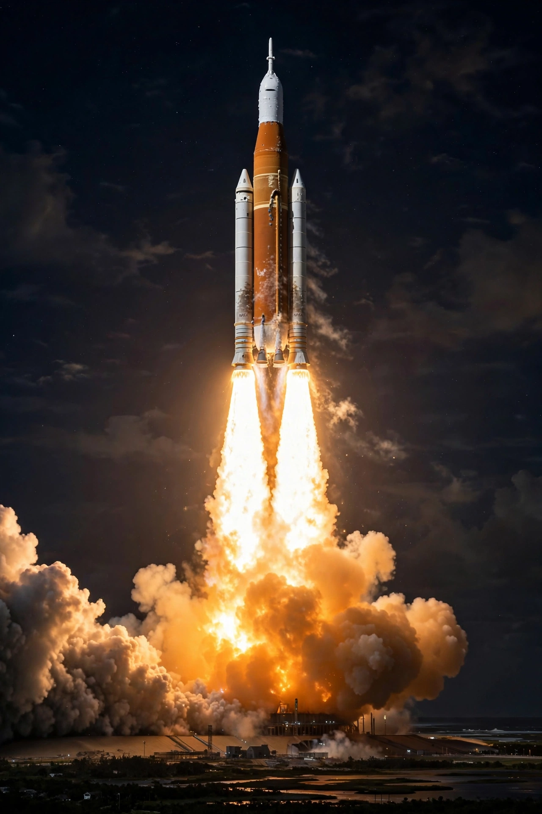

Artemis program
From Wikipedia, the free encyclopedia

Artemis I lifts off from Kennedy Space Center, 16 November 2022.The Artemis program is a NASA-led human spaceflight program, run with international and commercial partners, to return humans to the Moon for the first time since Apollo 17 in 1972 and to establish a sustainable lunar presence as preparation for crewed missions to Mars. It is named after the Greek goddess Artemis, twin sister of Apollo.
The program's core vehicles are the Space Launch System (SLS) heavy-lift rocket and the Orion crew capsule. The uncrewed Artemis I test flight launched on 16 November 2022, sending Orion around the Moon and back. Artemis II, the first crewed flight, will loop around the Moon without landing; Artemis III aims to land two astronauts near the lunar south pole, including the first woman and first person of colour to walk on the Moon, using a version of SpaceX's Starship as the human landing system.
Elements
Supporting elements include the Lunar Gateway, a small space station planned for lunar orbit; commercial landers from SpaceX and Blue Origin; and new spacesuits for surface operations. Schedules have slipped repeatedly, and the program's cost and the expendable SLS have drawn criticism, but Artemis represents the central direction of American human spaceflight in the 2020s. Partner agencies include the European Space Agency, JAXA and the Canadian Space Agency.